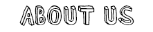
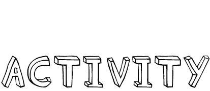

〜〜〜〜〜〜は、
学内最大級オールジャンルインカレ音楽サークルです。
東大以外にも、日本女子大、東京女子大、お茶の水女子大、フェリス女学院大、慶應大、早稲田大、洗足音大、桐朋音大など、
総勢100名以上が所属しています。
音楽を愛する人であれば誰でも、
大学・学年・性別を問わず大歓迎です！
1 演奏ジャンルの幅広さ
SOUL・FUNK・SKA・ROCK・POPS・JAZZ・FUSION・BLUES・METALなど…
どんな人でも音楽の趣向が合う仲間を見つけて演奏できますし、今まで聴いてこなかったような音楽にも沢山触れられます。
2 パートの豊富さ
ギター、ベース、ドラム、キーボード、ボーカル、パーカッションはもちろん、
バイオリンなどの弦楽器も大活躍します。
トランペット、トロンボーン、サックスなどの
強力なホーンセクション
は当サークルの自慢です!3 フリーバンド制
固定バンド制ではなく、
’’イベントごとに部員同士が好きな人と自由にバンドを組む’’
という制度を設けています。
学年を問わず色々な人と演奏ができ、
様々なジャンルの音楽を演奏することができます。

イベントの前に自由にバンドを組み、バンドメンバーで練習をすることが主な活動です。
（1バンドで約3〜4回練習をすることが多いです）
出演するライブや、各ライブにおいて出演するバンド数は自由に決めることができます。
週何回といった定期的な活動がないため、
それぞれのペースに合った活動が可能です。
活動費用は年に2回5000円ずつ払う部費、
ライブに出演する際の出演料、
合宿費、個人機材費、飲み会費等…
普段は平日休日問わず、部室で練習しています。
多くの機材が揃っており、
webカレンダーで予約することでいつでも練習が可能です。
また、部室では月2~4回のペースでセッションを行っています。
ぜひお越しください！
活動場所 →


東大POMPでは、新入生の皆様の質問を募集しています！気になること・知りたいこと等ございましたら何でもお気軽にお聞きください☺️ https://t.co/ETOTvEV1cp #質問箱 #peing #ut_pomp
— 東大POMP (@ut_pomp) 2020年3月11日